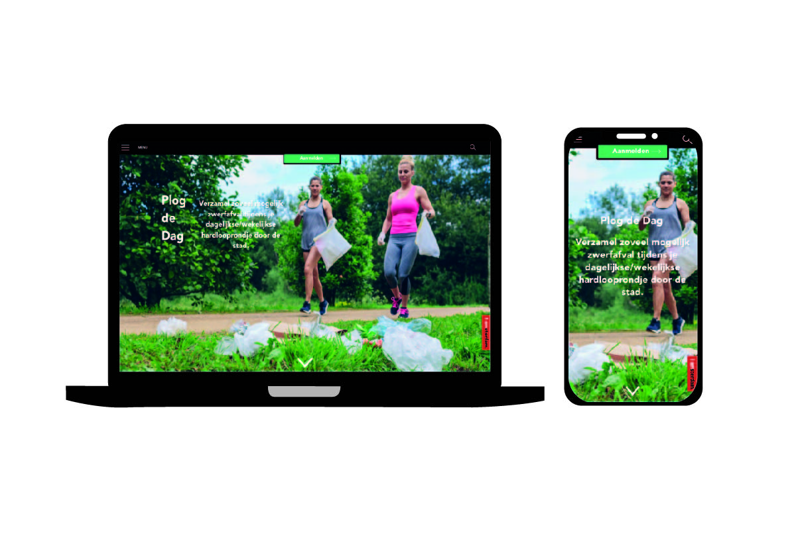
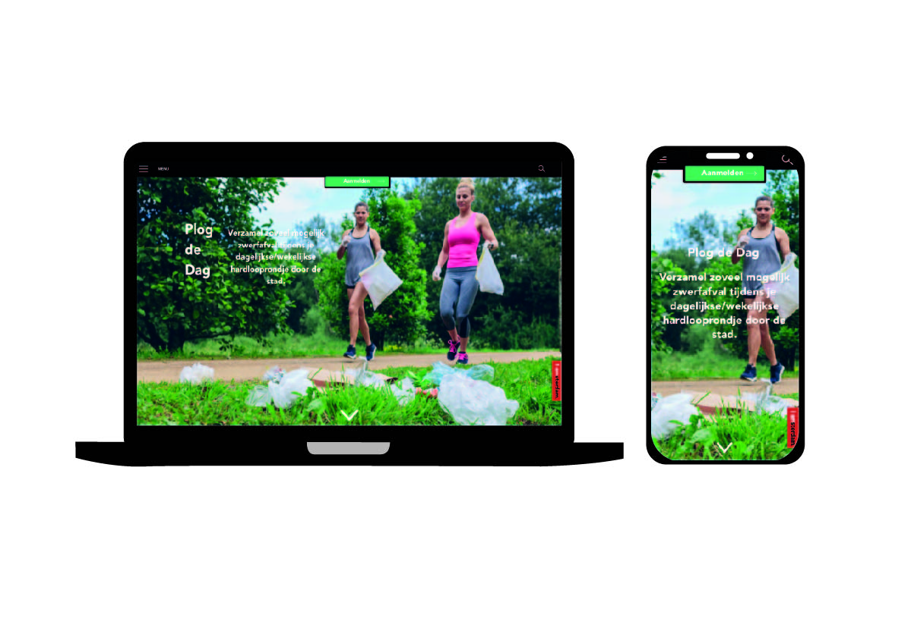

Vormgeving
Bij het vak vormgeving kregen we de opdracht om een extra pagina te maken in de stijl van de Iamsterdam website. De opdracht ging om het goed kunnen verwerken van een huisstijl en responsive kunnen designen.
Bij het vak vormgeving kregen we de opdracht om een extra pagina te maken in de stijl van de Iamsterdam website. De opdracht ging om het goed kunnen verwerken van een huisstijl en responsive kunnen designen.
